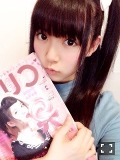
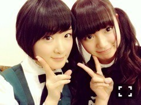
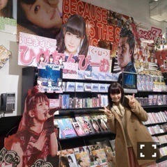
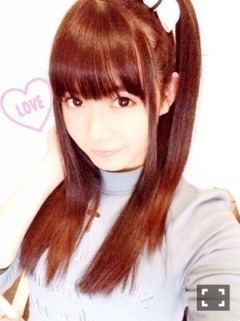
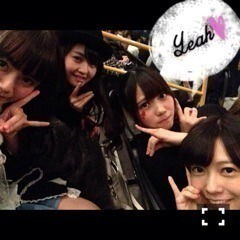
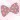
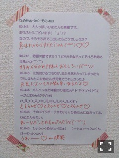

| 2015/01 11 Sun | ひめたん-OoO-その512 |

新年一発目
グラビアザテレビジョンさんに
撮影をしていただきました( ﹡ˆoˆ﹡ )
しかも！なんと！
あすかりんとのペアグラビア！
格差社会コンビ♡
これは永久保存版ですよ！私の中で！
お楽しみに～
あすかりんといえば
昨日発売のCUTiEさん♡♡

表紙おめでとう♡
みなさんみましたー？
めっちゃかわいいの～♡♡
恥ずかしくて本人に言ってないけれど
発売日の午前中に
本屋さんダッシュした///
さゆりん、万理華、あすかりんの
インタビューも載ってるよ～
チェックしてみてね( ˇωˇ )

乃木ののは
聴いていただけましたか？
前回のまいやんらりんの時も
聴いてて思ったけど
タイトルコールがまーあ揃う揃う。
ふわふわしてて
実は真面目（自分で言っちゃう）な
私たちらしいラジオになったかなと
思いましたがいかがでしたでしょう～
2人喋りでは
お互いの距離感が伝わったり
深い話がお届けできてるかなあ。
真夏さんとのラジオは
収録ってことも半分忘れてついつい
話し込んでしまいました( ˇωˇ )
いつもの3人とは
また違った楽しみがあっていいですね！
まなひめのふたりに
投票してくださったみなさん
ありがとうございました♡
真夏と一緒に出来て
私も楽しかったし
心強かったです(´,,•ω•,,｀)えへへ
次回もお楽しみに！

この前のお渡し会
フタバ図書さんのユニフォームが
懐かしくて懐かしくて。
地元にいる時は
とってもお世話になっていたので
もう久々に見てテンション！！
ずーっと生駒ちゃんに
抱きついてました♡
あ、そうだ！ねー聞いて！

HMV立川店さん
遊びに行ってきました！
ひめたんのポップ大きかった～
感動( ´•̥ω•̥` )♡
ありがとうございます！！
とっても丁寧に作っていただいて
愛のある、粋なデザインです
きゅんきゅん王国民なら
喜んでくれるはず！ひめは嬉しい！
みなさんも是非
遊びに行ってみてくださいね。

ベビメタちゃんのライブに
行ってきました！
3人ともかっこよかった～( ˇωˇ )
いつもベビメタちゃんのライブ
刺激を貰っています
ライブに関わってくださっている
すべての皆様
素敵なライブありがとうございました！
ライブは
ステージに立つのと観るのでは
違った景色が広がってて......
客席に座ってみることって
あんまりないから
新鮮(´｡･v･｡｀)
みなさんは客席から見た私たちが
どんなふうにうつってるんだろう？
陽菜ちゃん、ゆったん、万理華も
お仕事終わりに駆けつけてくれて
一緒に観ました\( ˆoˆ )/

乃木どこは
オモテ年表ウラ年表の後編です～
のぎ天はクイズ！
一緒に参加してみてね☆
あ、明日は成人の日ということで
新成人のみなさん
おめでとうございます(﹡ˆoˆ﹡)
乃木坂の新成人のみんな
振袖かわいかった～♡


ひめたん、広島のマツダスタジアム
行ったことある？
オープンしたばっかの頃
解放日に遊びに行きました！
試合はまだみたことないので
今度は是非試合観戦に行きたいです( ˇωˇ )
ひめたんの事を
めーちゃんて読んでるのは誰ですか？
愛未ちゃんが命名しました！
陽菜ちゃん、ちーちゃん、ゆったん、
まあや、ひなちま とかかなあ？
あすかりんはたまに。万理華もたまに。
ひめたんはoverture聴くと
上がるかな？？？
ライブ前に聴いてスイッチ入るのを
身体が覚えてしまったので
プライベートではあまり
聴こうとしないです。笑
みんなはいっぱい聴いてね♡
ひめたんっていつも
ツインテールのために
リボン同じの２個買ってるー？
そうだね、買うときはそうしてる
かたっぽ無くなったら
ツインできないから
管理はそれなりに大変なんだよ～
ひめ、ガサツなとこあるからさ☆
ひめたんは録りだめたアニメ、
二倍速で見たりする？
ひめはやったことないけど
メイクさんがそれやるって言ってた！
え、みんなやるもんなの？
話わかんなくなりそう(・ω・)
白に緑のラインのベスト
紺に白のラインのベスト
どっちが良いと思う？ちなみに女子です
個人的には紺ベスト好きです
ひめたんは白だったけれど
すぐ汚しちゃうから大変でした( >_< )
おかげでシミ取るの上手なったよ(笑)
ひめたんの日記の
コメント欄下２ケタに46を踏んだ方へ
手書きでコメ返するコーナー
＼ ひめたん46 ／



2枚目から貼り方変えてみました～
いつもたくさんのコメント
ありがとうございます
46の紙を印刷してても
改めて感じました
たくさん遊びに来てくれて感謝です❁
お渡し会やRの法則の感想など
全部読みました\( ˆoˆ )/
真夏さんからのコメントも
見つけてしまって
思わずメールしちゃった......♡
みなさんもよかったら
探してみてね～
最後に！
1stアルバム「透明な色」を
PRするための全国キャンペーンを
させていただきます
ななみん、かずみん、ひめたんは
福岡行くぞーん\( ˆoˆ )/
1/14（水）
RKB「今日感テレビ」に
ゲスト出演します～
チェックよろしくお願いします！
(＊´・ω・＊)
コメント(1056)
2015/01/11 23:42